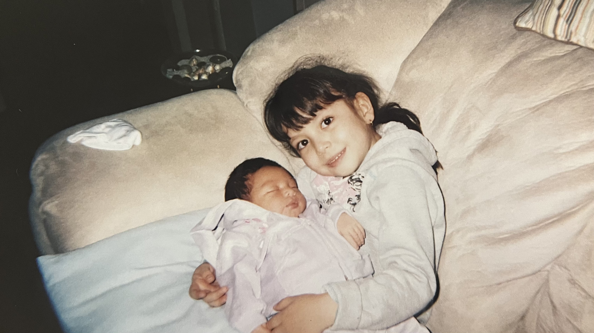

I was born in Guadalajara, Mexico in 2004. Meaning I am a first generation immigrant and I moved to the United States when I was 5 years old!
Soon after moving to the US, my little sister was born. So not only am I a first.
I am also an older sister. I have a younger sister who is 5 years younger than me.
She is the most important person in my life and I love her so much!

Growing up, I was always very curious and eager to learn new things. Which
eventually sparked my interest in technology and computers. My first console was a hand-held pink DS. Then, for christmas I got the 3DS.
I loved playing games on it and I would spend hours on end playing it, and now, I collect them!
Now, my life consists of going to college and advacating when I can! I am in a club called sheCodes, where we advacate for inclusivity in the tech space and every spring we teach highschoolers how to code! It is a great experience and I love being able to give back to the community!
I first joined sheCodes my sophmore year! I participated when I could and became our public relationship chair for the following year! This year, I am the Internal Vice President of sheCodes, where I am in charge of two of our biggest programs, Semester Long Project (Fall 2025) and Future Women Developers Confrence (Spring 2026)! I feel honored being able to lead such an important aspect of the club!